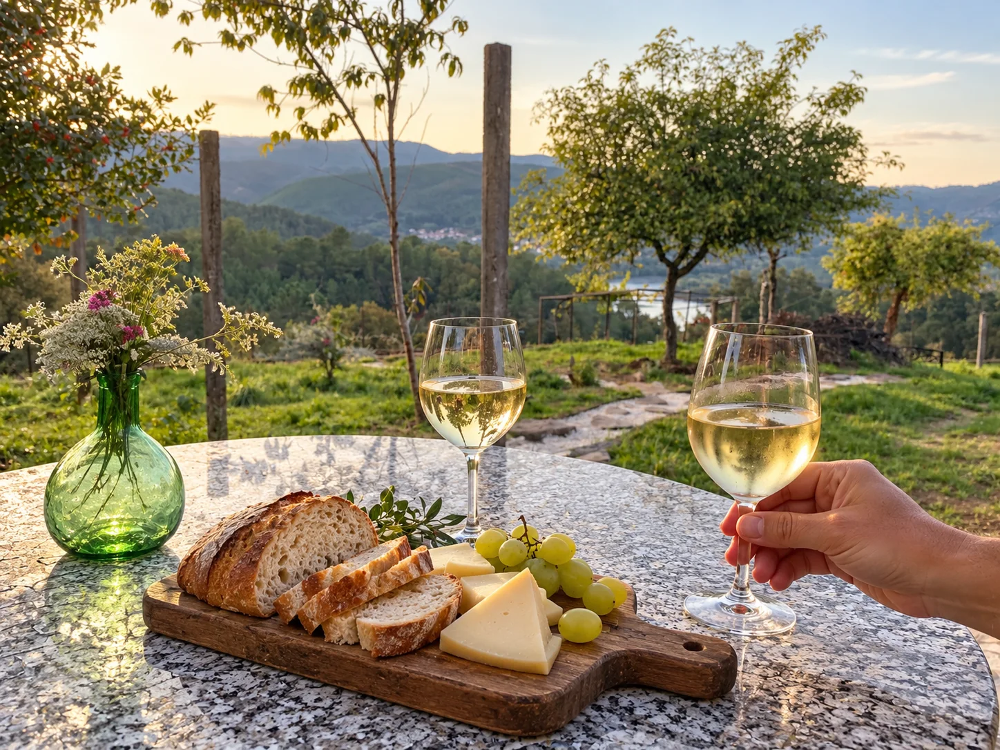

RURAL STAY IN A ARNOIA · NEAR RIBADAVIA, GALICIA
A house with history. An escape to remember.
Casa Cruceira is a restored 19th-century winery among vineyards, in a small village in A Arnoia, near Ribadavia. It retains its stone, wood and traditional wood-burning cooker, inviting you to enjoy cooler days without leaving the house.
Outside, 500 m² of private grounds await: breakfasts overlooking the Miño, a hanging chair for reading, trees to pick ripe fruit from and a spot by the fire to linger in conversation when the season permits.
And when you feel like exploring, the Camiño Miñoto Ribeiro passes right by the door. Walks, wineries, historic towns and thermal baths complete an escape to enjoy at your own pace.
Come as a couple or share it between four. There is space to spend time together and quiet corners to switch off.
Would you like to become part of this story?


Some days end just as they should.
A walk, a thermal bath, a glass of Ribeiro.
Views to fall in love with.
And back to your own little haven of calm.
Trails
Walk from the doorstep
Wine
Discover O Ribeiro
Calm
Take your time
Thermal baths
Unwind and recharge
YOUR GALICIA ESCAPE
A rural stay in A Arnoia, near Ribadavia.
Casa Cruceira is in Lapela, in the municipality of A Arnoia, O Ribeiro (Ourense, Galicia). A restored winery for 4 guests, with two bedrooms, one bathroom and 500 m² of private grounds. Pets are welcome and a cot is available.